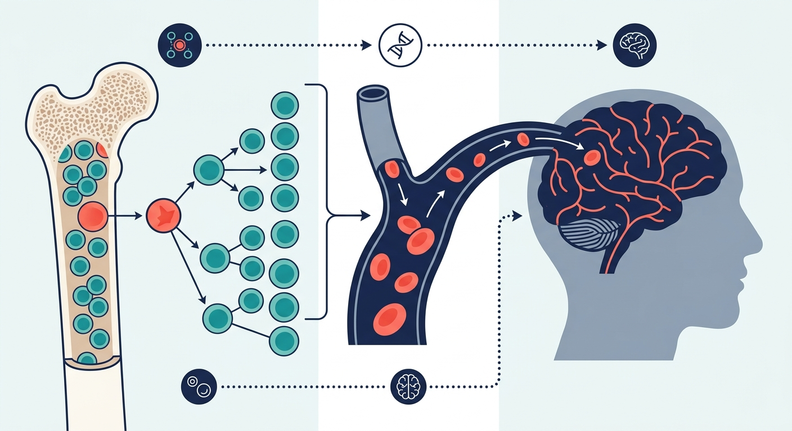

The Mutiny in Our Veins: How Rogue Blood Cells Map the Shrinking Brain

Imagine your blood as a finely tuned biological river, delivering life and nutrients to the high-security fortress of the brain. But as we age, a quiet mutiny begins in the deep recesses of our bone marrow. A single, mutated blood stem cell breaks ranks, multiplying aggressively to produce a massive army of genetically altered descendants. This phenomenon, known as clonal hematopoiesis (CH), was long thought to be a silent spectator of aging, occasionally flaring into blood cancers or fueling cardiovascular inflammation. Now, a groundbreaking longitudinal study has revealed a far more chilling reality: these rogue blood cells are tracking, and potentially driving, a devastating pattern of brain shrinkage that closely mimics Alzheimer's disease.
To uncover this hidden connection, researchers turned to one of the world's most precious aging datasets: the Lothian Birth Cohort 1936. Tracking over 1,000 community-dwelling older adults in Scotland from ages 73 to 79, the team leveraged advanced epigenetic profiling tools. Rather than relying on expensive, direct DNA sequencing, they deployed two innovative methylation-based algorithms: COMET, which estimates clonal burden, and a novel score called CIMS, designed to capture the broader inflammatory footprint of both mutant and wild-type immune cells. Coupled with repeated structural MRI scans over a six-year window, this approach allowed scientists to watch, in near real-time, how the evolution of a participant's blood lineage mirrored the physical degradation of their brain.
The results were striking. As the burden of clonal hematopoiesis escalated over time, the participants' cerebral cortex exhibited a progressive, left-lateralized wasting away. Intriguingly, this was not random, generalized shrinkage. When mapped against established neuroimaging templates, the atrophy pattern showed a remarkable spatial correspondence with the classic cortical signatures of Alzheimer's disease, specifically targeting the medial temporal and parietal regions. The implications for the longevity and biotech sectors are profound: neurodegeneration may not be an isolated, "brain-only" problem, but rather a systemic disease heavily influenced by somatic evolution in our cardiovascular and immune systems.
However, before investors and drug developers rush to reprogram the bone marrow to cure dementia, several critical caveats demand attention. First and foremost, this study demonstrates a compelling association, not a direct causal link; it remains unclear whether these rogue blood cells actively secrete inflammatory signals that cross the blood-brain barrier to destroy neurons, or if both clonal expansion and brain atrophy are independent symptoms of a deeper, systemic aging clock. Additionally, the Lothian Birth Cohort represents a highly homogeneous, geographically localized population, leaving open the question of whether these findings generalize globally. Most notably, the classic hallmark of Alzheimer's—hippocampal atrophy—was not significantly associated with clonal burden in this cohort, suggesting that while CH tracks an Alzheimer’s-like cortical pattern, it may represent a distinct, broader pathway of adverse brain aging rather than canonical Alzheimer's pathology itself. Bridging this gap will require clinical trials that directly measure amyloid and tau biomarkers alongside blood clonality.
Sources & Citations:
Primary Source: Clonal Haematopoiesis Tracks Alzheimer's-like Cortical Atrophy in Community-Dwelling Older Adults (medRxiv)
- "Clonal Haematopoiesis Tracks Alzheimer's-like Cortical Atrophy in Community-Dwelling Older Adults." medRxiv, 2026. DOI: 10.64898/2026.09.10.26362681